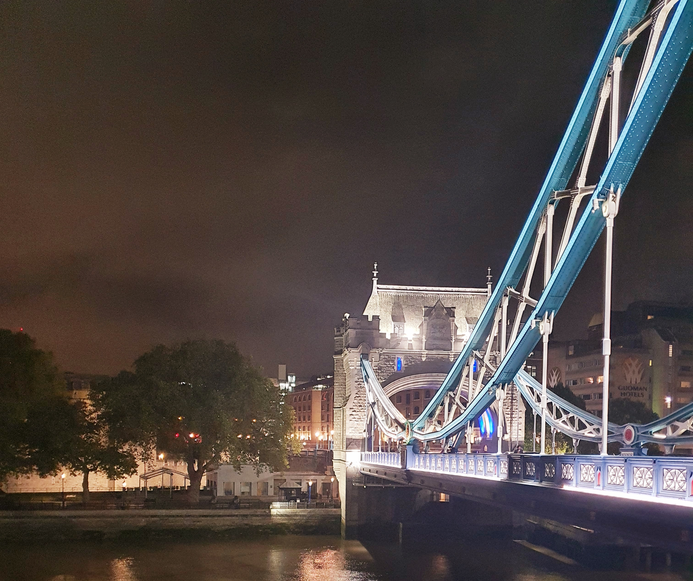

The Girl Who Showed Me London
Amorino's chocolate icecream is better than its pistachio flavor!
 Credits: London Art by Andrea Laliberte - at AllPosters.com
Credits: London Art by Andrea Laliberte - at AllPosters.com
It took me a good 6 months and an embarassing walk back home with a beautiful date to realize I know little about the city that I live in. I met this amazing girl who I called over to try a suboptimal Italian cooking experiment. I was walking her back home when she realized I actually didn't know how to navigate to her place. We were walking from Covent garden to somewhere near Bank. She was sweet enough to tour guide and tell me the origins of Londinium, the meat market of Barbican, and the distinction between the City of London and Westminster.
When we reached her place, she graciously pointed me to where St Paul's Cathedral was and said it looked majestic at night. She decided not to see me again for an array of reasons that I can only hypothesize (my loss) but that experience left in me an unsatiated need to explore a little more on how London came about. So, I bought this book by Simon Jenkins called "A Short History of London". Simon starts the first chapter encouraging me to ride a bicycle from the Tower of London to Covent Garden and I did just that except I did a round-trip on foot from Leicester Square to The Tower of London.
Trafalgar Square
I started walking from this place called Trafalgar Square in the City of Westminster in Central London.
This place was named after the the battle of Trafalgar that was fought in 1805. The square came to existence in 1844.
It is popularly known for its iconic fountains and the center piece called the Nelson's column. The spot is constantly occupied by
residents and tourists alike. It has been a prime host to many significant protests.
After seeing it to satisfaction, I took a left on The Strand and kept walking until it turned into Fleet St and consequently Cannon St.
There stood the mighty St Paul's cathedral.
St Paul's Cathedral
This cathedral is on Ludgate Hill at the highest elevation in the City of London. Like she mentioned, it does look amazing at night. Interestingly, the cathedral was built multiple times after its first conception and the version you see today (2020), was architected by Sir Christopher Wren in 1669. There is a large crypt (large room underneath the building), that provides structural stability to the cathedral. You can read a lot more about it on Wikipedia so I'll move on...
The Bank of England, London Stock Exchange and Mansion House
I kept walking on Cannon St and was determined to go to Ludgate Hill to reach the Tower of London but being the attention deficit person I am, I wandered onto Queen Victoria St then Cornhill St and reached the Royal Exchange. This was a good bad decision, in that I got to see 3 different iconic places from one spot. The Bank of England, London Stock Exchange and Mansion House. I wandered around for a few minutes and took a few suboptimal pictures and then set my GPS to get me straight to where I wanted to be (The Tower of London).
Tower of London, Historic Roman Wall
Seeing the Tower of London was a little underwhelming from a purely aesthetic perspective. The 1000 year history behind the tower is quite fascinating though. Nearby, there is a remaining artifact that of the wall that used to dictate the boundaries of the City of London.
Tower Bridge

The real beauty was the tower bridge that was close by. I could get some good close up shots and then decided to trace back home.
It was a good night out and there are many more adventures to come as I explore the Saxon history of London in the same book.
Until next time...!